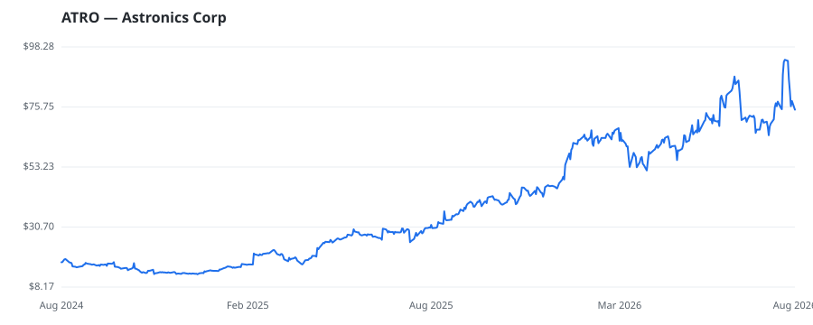

bullish · bearish · n/a — dots: price>SMA10 · SMA10>SMA50 · SMA50>SMA200 · up>down volume (20d)
Capital Goods · mid cap

Astronics Corporation is a provider of technologies to the aerospace, defense, and electronics industries, offering high-performance electrical power generation and distribution systems, motion systems, lighting and safety systems, avionics products, systems certification, aircraft structures, and automated test systems. The company operates through two reportable segments, Aerospace and Test Systems. The Aerospace segment designs and manufactures products for the aerospace and defense industry and generates the majority of revenue, while the Test Systems segment designs, develops, manufacture AIRCRAFT PARTS & AUXILIARY EQUIPMENT, NEC · website
| Revenue | $862.1M | Net income | $29.4M |
|---|---|---|---|
| Operating income | $76.4M | Diluted EPS | $0.81 |
| Assets | $706.7M | Equity | $140.1M |
This name produced 0.3% of the ranked funds’ total alpha.
| Fund | Fund alpha vs SPY | Position | % of book |
|---|---|---|---|
| Lisanti Capital Growth, LLC | -11% | $1M | 0.2% |
Hedge data: SEC EDGAR 13F · ranked funds beat SPY in >50% of their quarters · fund alpha = mirror-portfolio return minus SPY.